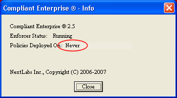

Is this policy actually deployed?
- For desktop enforcers, you can also right-click on the DLP icon in the system tray on the local host, then select About Windows Desktop Enforcer. This will open a window with a Policies Deployed On display, which shows the date and time the most recent policy was deployed to this enforcer. If this reads "Never", or if the time displayed is before you deployed the policy, this means the policy was not deployed to this enforcer, and you need to find out why--click Next.

If you confirm that the policy is properly deployed to this enforcer, you can proceed to Is the Version Correct?